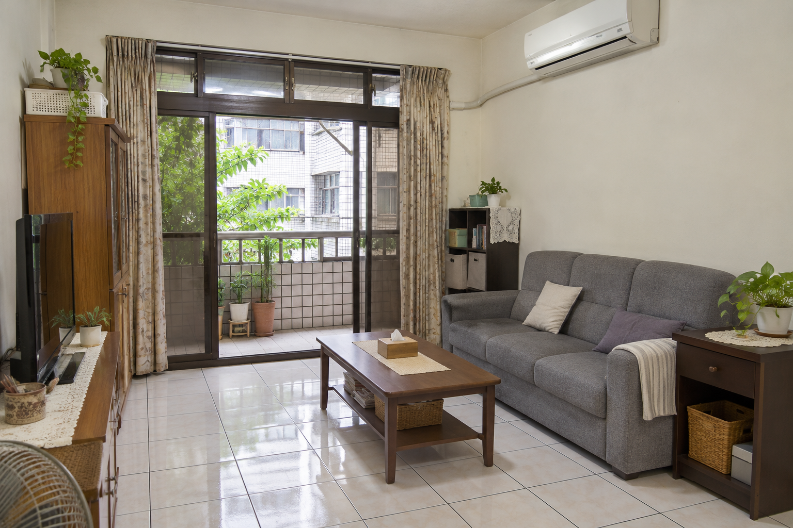
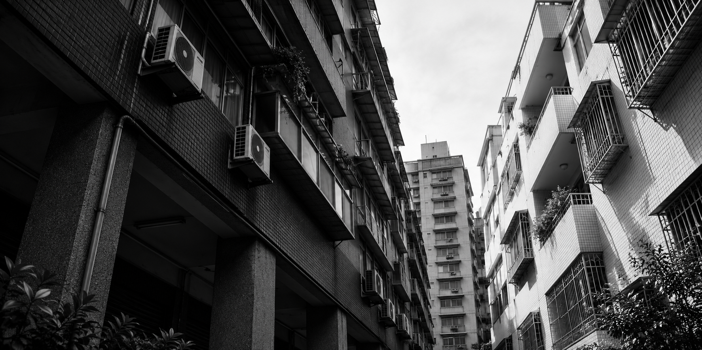

找到適合你的家。
虛構場景・AI 生成影像
關於我
你好，我是林達。
我是一名房地產業務。我陪買方從預算、通勤和生活需求出發，篩選物件、安排看房，也會把每間房子的採光、格局和社區管理費整理成好比較的資訊。
如果你正在考慮出售，我會和你一起釐清價格與時程，讓你知道每一步要準備什麼。
了解服務流程買屋與售屋，怎麼開始？
-
先聊需求
買屋從預算、通勤與必要格局談起。售屋則先了解屋況、預期價格和可配合的時程。
-
整理選項
陪買方比較物件並安排看房，或和賣方討論整理屋況、拍攝與帶看準備。
-
確認下一步
把疑問、待查資料和時間安排列清楚，讓你帶著完整資訊做決定。
聊聊你的
買賣屋計畫。
用示範表單試填需求。請使用虛構資料，表單只在目前頁面顯示結果。